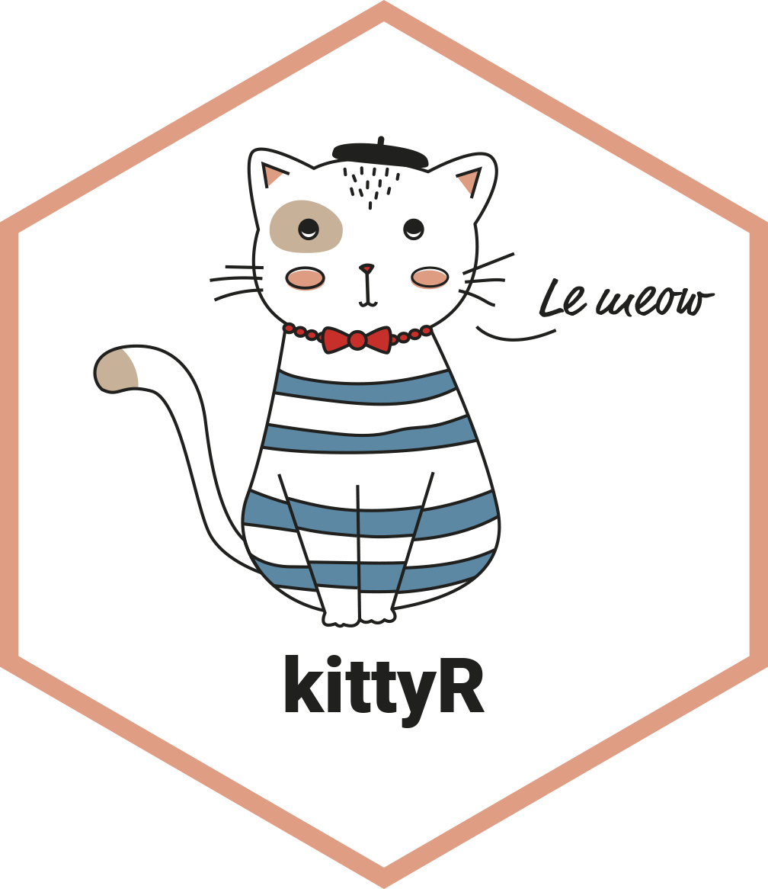

Prepare a dataframe with URLs for cat pictures.
Source:R/kittypics_df_maker.R
kitty_pics_df.RdMostly useful for internal workings of this package, this function extracts images at given URL and returns it in a data frame.
Examples
set.seed(123)
kittyR::kitty_pics_df("https://unsplash.com/s/photos/kitten/")
#> Warning: Unauthorized (HTTP 401).
#> Error in read_html.response(x$response, ..., base_url = x$url): Unauthorized (HTTP 401).